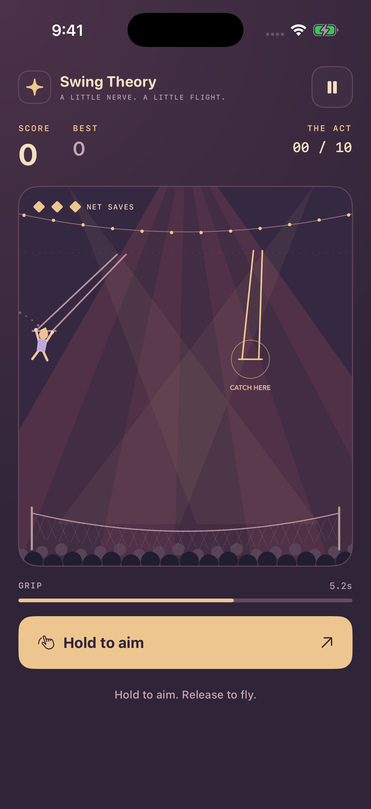

Hold to aim.
Touch and hold to slow your swing. A dotted arc shows where you’ll fly. Watch it turn mint when your release lines up with the next bar.
YOUR MOMENT IN THE SPOTLIGHT
That tiny moment between holding on and letting go? There’s a whole game in it.
Swing through a velvet circus, find your line, and leap for the next trapeze. Ten transfers. Three net saves. One more try.
MADE FOR IPHONE · IOS 17 AND LATER

THREE LITTLE THINGS TO KNOW
Touch and hold to slow your swing. A dotted arc shows where you’ll fly. Watch it turn mint when your release lines up with the next bar.
Release while swinging right and upward. Reach the glowing ring and your acrobat catches the bar automatically. You bring the timing.
Link catches for a growing streak bonus. Centered approaches earn extra precision points. A missed leap uses one of your three net saves.
SMALL ROUNDS. A LONG WAY TO IMPROVE.
Moving trapezes and varied layouts keep each performance fresh. The grip timer tightens as your act progresses, and every clean catch makes the next one matter a little more.
Play offline, save your best score on your iPhone, and settle into your own rhythm. No accounts or ads. Just you and the next bar.
A HAND FROM THE WINGS
Questions, close calls, or ideas for the next act—we’d love to hear from you.
Get in touch